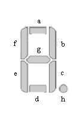

组合逻辑的Verilog HDL描述（二）
用always过程语句描述组合逻辑
case语句和七段译码器
七段数码管是电子设备中常见的显示器件，可以用来显示数字和少量字母符号。一位数码显示器由八个发光二极管组成，其中七个发光二极管a~g控制七个笔画（段）的亮或暗，另一个控制一个小数点的亮和暗，图 1是一种常见的笔画命名。对于共阴极的数码管，对某一段发光二极管驱动高电平即点亮该段；对于共阳极的数码管，则驱动低电平点亮。例 1是用于共阴极七段数码管的十六进制数-7段译码器。

图 1. 七段数码管的段定义
例 1. HEX-7段译码器
module decode4_7 ( input [3:0] data, output reg [7:0] seg ); always @ * begin case(data) 4'h0 : seg=8'h3f; 4'h1 : seg=8'h06; 4'h2 : seg=8'h5b; 4'h3 : seg=8'h4f; 4'h4 : seg=8'h66; 4'h5 : seg=8'h6d; 4'h6 : seg=8'h7d; 4'h7 : seg=8'h07; 4'h8 : seg=8'h7f; 4'h9 : seg=8'h6f; 4'ha : seg=8'h77; 4'hb : seg=8'h7c; 4'hc : seg=8'h39; 4'hd : seg=8'h5e; 4'he : seg=8'h79; 4'hf : seg=8'h71; default : seg=8'hxx; endcase end endmodule
if-else语句和优先权编码器
优先权编码器常用于计算机的中断系统。如果有多个中断源提出中断请求，需要根据它们的优先权的高低进行排队，输出优先权最高的中断源编码。if-else语句非常适合这种优先级的描述，例 2是对8个中断源进行排队的逻辑描述，如果没有一个中断源提出中断请求，None_ON输出为1；否则None_ON输出为0，并且Out输出优先级高的中断源编码。
例 2. 优先权排队逻辑
module Priority ( input [7: 0] In, output [2: 0] Out, output None_ON ); reg [2: 0] Out; assign None_ON = ~|In; always @ * begin if (In[0]) Out = 3'b000; else if (In[1]) Out = 3'b001; else if (In[2]) Out = 3'b010; else if (In[3]) Out = 3'b011; else if (In[4]) Out = 3'b100; else if (In[5]) Out = 3'b101; else if (In[6]) Out = 3'b110; else if (In[7]) Out = 3'b111; else Out = 3'b000; end endmodule